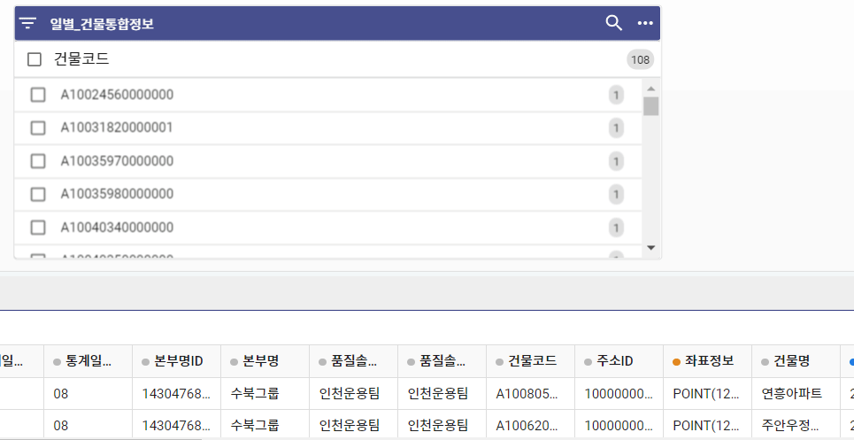
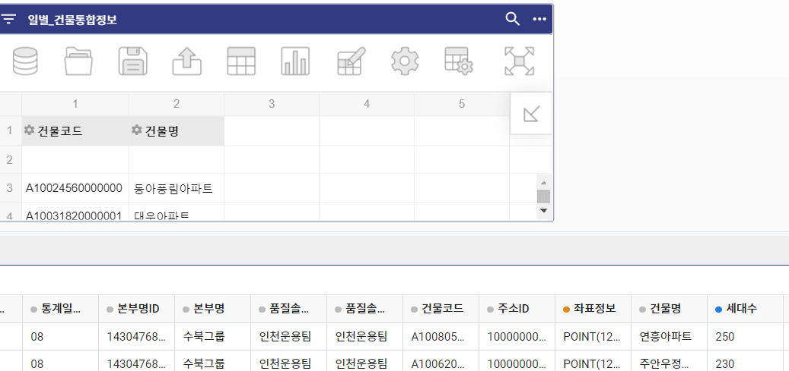

<!DOCTYPE html>
<html>
  <head>
    <meta charset="UTF-8" />
    <link rel="stylesheet" type="text/css" href="css/introjs.min.css" />
    <link rel="stylesheet" type="text/css" href="css/introjs-modern.css" />
    <link rel="stylesheet" type="text/css" href="css/styles.css" />
  </head>
  <body>
    <div style="position: absolute;">
      <div style="position: relative; top: 0px; left: 0px;"></img>
      </div>
      </div>
      
      <div style="position: absolute; opacity:0;">
        <svg width="1280" height="720" style="position: relative; top: 0px; left: 0px;">
          <rect id="2-1" x="97" y="143" width="158" height="190"></rect>
          <rect id="2-2" x="207" y="144" width="26" height="22"></rect>
          <rect id="4-1" x="1025" y="330" width="238" height="178"></rect>
          <rect id="4-2" x="245" y="240" width="219" height="241"></rect>
          <rect id="6-1" x="277" y="174" width="116" height="278"></rect>
          <rect id="7-1" x="11" y="142" width="658" height="343"></rect>
         </svg>
      </div>

      <script src="intro.min.js"></script>
    <script>
       var options_before = {
        steps: [
        {intro:"튜토리얼 2 피벗 테이블 <br><br> 본 튜토리얼에서는 피벗 테이블을 다루는 방법에 대해 학습합니다"},
        {
           intro:'칼럼 하나를 추가한 초기 상태입니다',
           position: "right"},
        {
           element: document.getElementById("2-1"),
           intro:'특정 데이터를 체크하여 필터링이 가능합니다',
           position: "right"},
        {
           element: document.getElementById("2-2"),
           intro:'검색 필터링을 통해 특정 값의 필터링이 가능합니다',
           position: "right"},
           {
           intro:'이번 튜토리얼의 목표는 피벗테이블을 이용해 침투율을 구하는 것입니다',
           position: "left"},
           {
           intro:'칼럼 하나가 추가된 상태에서 레이어를 추가하여 분류 기준 필드를 추가할 수 있습니다<br>\
           ',
           position: "right"},
           {
           intro:'칼럼 하나가 추가된 상태에서 계산 값을 추가하여 측정 값 필드를 추가할 수 있습니다<br>\
표시할 필드 값을 수정할 수 있습니다<br>\
',
           position: "right"},
           {
           element: document.getElementById("4-1"),
           intro:'측정 값 필드를 조합하여 계산식을 추가할 수 있습니다.',
           position: "left"},
           {
           element: document.getElementById("4-2"),
           intro:'1번 인덱스 측정 값인 인터넷가입자 합과 0번 인덱스인 세대수 합을 이용해 침투율을 계산할 수 있습니다',
           position: "left"},
           {
           intro:'필드 옆 톱니바퀴를 클릭하여 상위, 하위 값들의 추출이 가능합니다',
           position: "top"},
           {
           element: document.getElementById("6-1"),
           intro:'피벗 테이블은 다양한 그래프의 형태로도 표현이 가능합니다',
           position: "right"},
           {
           element: document.getElementById("6-2"),
           intro:'바 형태 그래프를 클릭합니다',
           position: "right"},
           {
           element: document.getElementById("7-1"),
           intro:'침투율 상위 10개 건물의 그래프를 얻을 수 있습니다',
           position: "right"},
          ],
        
        
        tooltipClass: "LOL",
        showProgress: true,
        showBullets: false,
        disableInteraction: true
    };

    window.onload = function() {
        var intro = introJs();
        intro.setOptions(options_before).oncomplete(() => {
        alert("튜토리얼 2 피벗 테이블을 완료했습니다 수고하셨습니다");
        location.href="main.html";
      });

        intro.start().onbeforechange(function () {
            if (intro._currentStep == "2") {
              document.getElementById("img").src = "css/img/2-2.jpg";
            } 
            if (intro._currentStep == "4") {
              document.getElementById("img").src = "css/img/2-3.jpg";
            } 
            if (intro._currentStep == "7") {
              document.getElementById("img").src = "css/img/2-4.jpg";
            } 
            if (intro._currentStep == "9") {
              document.getElementById("img").src = "css/img/2-5.jpg";
            } 
            if (intro._currentStep == "10") {
              document.getElementById("img").src = "css/img/2-6.jpg";
            } 
            if (intro._currentStep == "12") {
              document.getElementById("img").src = "css/img/2-7.jpg";
            } 
        });

        introJs().addHints();
    }
    </script>
  </body>
</html>
